WSC - Base Invités (Guests) - Créer et gérer les comptes invités
Accéder à l'interface de gestion
Depuis le Menu principal de WSC, cliquez sur le bouton Gérer les invités :
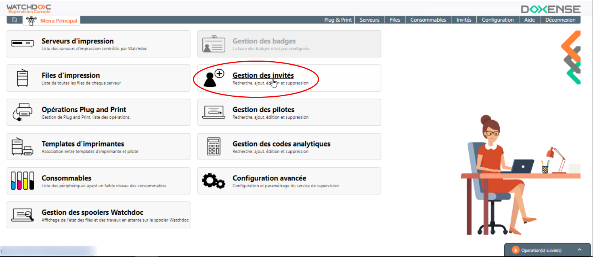
Vous accédez à l'interface Gestion des invités, dans laquelle s'affiche la liste des invités déjà enregistrés :
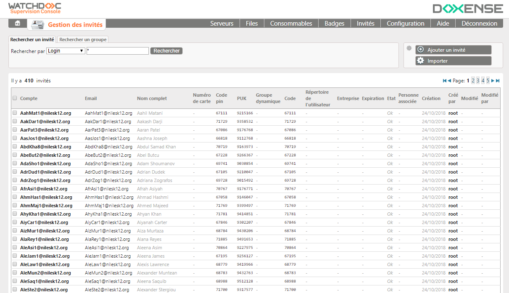
Créer un compte invité
Dans l'interface Gestion des invités, les invités déjà enregistrés sont affichés :
-
cliquez sur le bouton ;
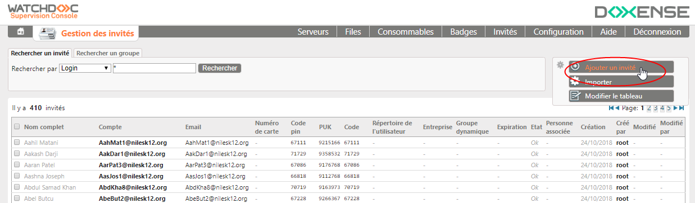
-
dans la boîte Ajouter un invité, remplissez les champs suivants :
Compte (obligatoire) : saisissez le compte utilisateur ;
Mot de passe : saisissez le mot de passe de l'utilisateur. L'utilisateur saisit ce mot de passe si l'authentification depuis le WES repose sur le compte et mot de passe.
Nom complet : saisissez le prénom et le nom de l'utilisateur ;
e-mail : saisissez l'adresse mail de l'utilisateur ;
Groupe dynamique : si nécessaire, indiquez le nom d'un groupe dynamique équivalent à l'attribut figurant dans un annuaire LDAP.
Code analytique : si nécessaire, indiquez un code analytique permettant d'associer l'invité à un compte spécifique afin de faciliter l'analyse de ses coûts d'impression (cf. Codes analytiques).
Dossier utilisateur : indiquez le dossier dans lequel l'utilisateur peut enregistrer des documents numérisés lorsqu'il utilise la fonction WEScan (avec la destination ScanToFolder).
Code PIN : saisissez le code attribué à l'utilisateur. L'utilisateur saisit ce code si l'authentification depuis le WES repose sur le code PIN.
Code PUK
Puk = Print User Key. Dans Watchdoc, il s'agit d'un code associé à un compte utilisateur pour permettre à ce dernier de s'authentifier dans un WES. Le code PUK est généré par un algorithme. L'utilisateur peut le consulter dans la page "Mon compte" de Watchdoc. Par souci de sécurité, nous déconseillons l'utilisation du code PUK et recommandons l'utilisation d'un login (compte utilisateur)/code PIN. : si vous souhaitez que l'utilisateur dispose d'un code PUK pour s'authentifier dans le WES ou dans la page Mon compte, vous pouvez :
soit laisser le champ vide, puis valider la création du compte, ce qui permet à WSC de générer un code PUK automatique. Dans ce cas, le type de l'algorithme doit avoir été défini dans la configuration de la base Invités (cf. Configuration de la base Invités).
soit saisir le code PUK dans le champ dédié.
Notez que, dans les deux cas, WSC préfixe le code PUK du chiffre 9 de manière à pouvoir différencier les codes PUK de la base Invités des autres codes PUK existants.
Par ailleurs, si le code (PUK et/ou PIN) existe déjà, un message vous en informe et vous n'êtes pas autorisé à créer le compte utilisateur.
Numéro de carte : si un badge est confié à l'invité, indiquez le numéro imprimé sur le badge. Cet identifiant peut être utile dans le cas où les badges serait perdu ou pour gérer un lot de badges dédiés aux invités. prêtés aux This can help for example to identify the owner of a lost card, or to manage a stock of guest cards.
Entreprise : indiquez le nom de l'entreprise de l'invité ;
Expiration : si nécessaire, indiquez une date d'expiration du compte. Une fois la date dépassée, l'invité ne pourra plus accéder aux périphériques.
Désactivé : précisez si vous activez ou désactivez le compte invité. S'il est désactivé, l'utilisateur n'accédera à aucun périphérique ;
Personne visitée : indiquez le nom du salarié dont dépend l'invité. Ce paramètre peut être utile pour savoir si le compte doit être maintenu en vue d'être réactivé ultérieurement.
-
cliquez sur le bouton Valider ;
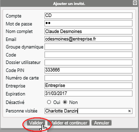
-
actualisez la page ;
èL'invité nouvellement créé apparaît dans la liste.
Editer un compte invité
Pour éditer un compte invité :
-
dans la liste des invités, cliquez sur le bouton correspondant à l'invité dont vous souhaitez éditer le compte ;
-
dans le menu affiché, sélectionnez Editer cet invité ;
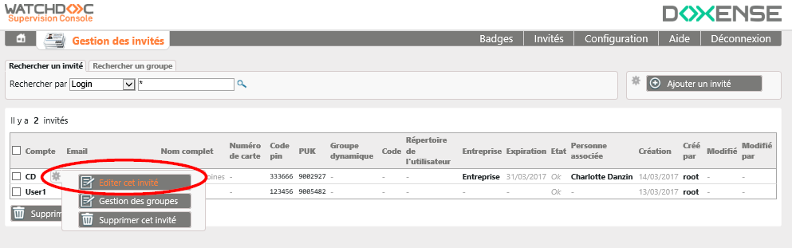
-
modifiez le compte invité ;
-
cliquez sur le bouton Valider pour enregistrer les modifications.
Supprimer un compte invité
Pour supprimer un compte invité :
-
dans la liste des invités, cliquez-droit sur la roue dentée située à droite de l'invité dont vous souhaitez supprimer le compte ;
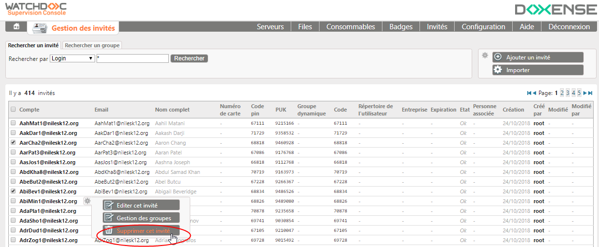
-
dans le menu affiché, sélectionnez Supprimer cet invité ;
-
Dans la boîte Suppression d'un invité, cliquez sur le bouton Valider pour confirmer la suppression :
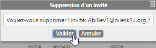
Supprimer plusieurs comptes invités
Pour supprimer plusieurs comptes simultanément :
-
dans la liste des invités, cochez les cases pour sélectionner les comptes à supprimer ;
-
cliquez sur le bouton situé en-dessous de la liste ;;
-
dans la boîte Suppression d'invités, validez votre demande de suppression.
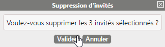
Importer des comptes invités en masse
Principe
La Console de Supervision dispose d'un outil permettant d'importer en masse une liste d'invités extraite d'une base de données tierce ou établie dans un document tiers.
Pour importer une liste d'invités dans la Console de supervision, il convient donc d'avoir enregistré ces invités au préalable dans un fichier .csv.
Exporter les comptes invités de la base source
Depuis la base de données comportant les comptes à exporter, effectuez l'export des données correspondant aux en-têtes suivants :
-
Login: identifiant de l'invité ;
-
Password : mot de passe défini par l'invité ;
-
FullName : nom complet de l'invité ;
-
e-mail : adresse mail de l'invité ;
-
DynamicGroup : groupe auquel appartient l'invité ;
-
Code: code de l'invité ;
-
HomeFolder: chemin d'accès au répertoire de sauvegarde de l'invité ;
-
PinCode: code PIN attribué à l'invité ;
-
CardNumber: code lu du badge de l'invité ;
-
Company: nom de l'entreprise d'appartenance de l'invité ;
-
Expiration : date d'expiration du droit d'accès ;
-
Locked: valeur 1 si l'accès est verrouillé ;
-
VisitedPerson: identité de la personne responsable de l'invité.
Différents formats d'export normalisés sont possibles, les principaux étant les suivants :
-
Standard :
-
le séparateur de colonnes est représenté par une virgule ;
-
les guillemets introduisent les valeurs ;
-
le format de date et d'heure est le suivant : yyyy-MM-dd HH:mm:ss
-
-
FR :
-
le séparateur de colonnes est représenté par un point-virgule ;
-
les guillemets introduisent les valeurs ;
-
le format de date et d'heure est le suivant : dd-MM-yyyy HH:mm:ss
-
-
US
-
le séparateur de colonnes est représenté par une virgule ;
-
les guillemets introduisent les valeurs ;
-
le format de date et d'heure est le suivant : MM-dd-yyyy hh:mm:ss AM
-
Le fichier d'export est ensuite enregistré dans un espace de stockage accessible depuis la Console de supervision.
-
Importer le fichier .csv
Pour importer la liste des invités depuis le fichier .csv :
-
depuis l'interface Gestion des badges, cliquez sur le bouton
-
depuis la fenêtre Import depuis fichier CSV, cliquez sur le bouton
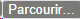
pour rechercher le fichier d'import dans votre espace de travail ; -
sélectionnez le fichier CSV à importer ;
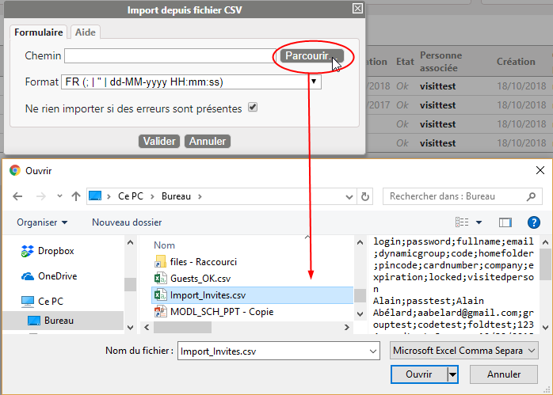
-
sélectionnez le format du fichier .csv ;
-
case "Ne rien importer si des erreurs sont présentes" :
-
cochez-la pour n'importer les badges qu'à la condition qu'il n'existe aucune erreur dans le fichier d'import ;
-
décochez la case pour procéder à l'import, même en cas d'erreur dans le fichier d'import. les erreurs survenues au cours de l'import sont signalées dans le rapport d'import affiché au terme de l'opération.
-
-
cliquez sur pour procéder à l'import :
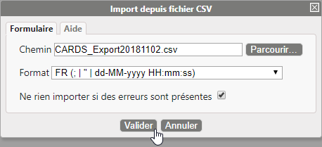
è Au terme de l'opération, un message d'information est affiché, soit pour vous informer de son succès, soit pour vous signaler les erreurs survenues. Ce message d'erreur est générique si vous avez coché la case "Ne pas importer..." ou précise la (les) ligne(s) erronée(s) si vous avez décoché la case :
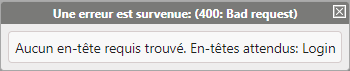
Le message d'erreur signale soit une lacune dans le fichier d'import (valeur manquante dans une colonne), soit une incompatibilité entre le format choisi dans l'interface et le format du fichier.
Modifier l'apparence de la liste des invités
Pour personnaliser l'apparence de la liste des invités :
-
dans l'interface Gestion des invités, passez la souris sur l'encart Ajouter un invité ;
-
dans le menu affiché, cliquez sur Modifier le tableau :
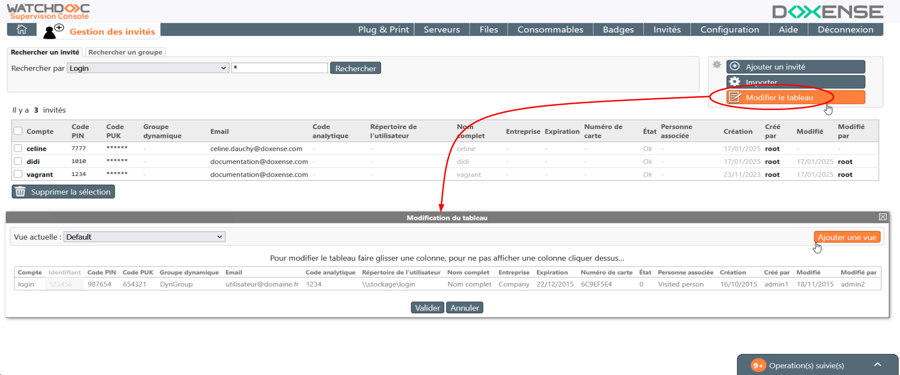
-
dans l'interface Modification du tableau, cliquez sur l'entête d'une colonne pour la sélectionner, puis déplacez-la à l'aide de la souris ;
-
pour ne pas afficher une colonne, cliquez sur son entête : ce dernier est alors grisé ;
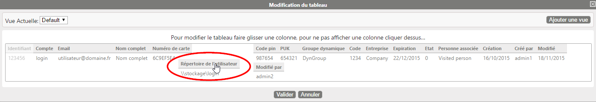
-
cliquez sur le bouton Valider pour confirmer la modification de la liste ;
-
pour créer une nouvelle liste, cliquez sur le bouton . Lorsqu'il existe plusieurs vues, c'est la dernière vue sélectionnée qui permet d'afficher la liste des invités.